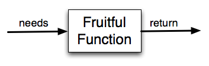

6.2. Functions that Return Values¶
Most functions require arguments, values that control how the function does its job. For example, if you want to find the absolute value of a number, you have to indicate what the number is. Python has a built-in function for computing the absolute value:
In this example, the arguments to the abs function are 5 and -5.
Some functions take more than one argument. For example the math module contains a function
called
pow which takes two arguments, the base and the exponent.
Note
Of course, we have already seen that raising a base to an exponent can be done with the ** operator.
Another built-in function that takes more than one argument is max.
max can be sent any number of arguments, separated by commas, and will
return the maximum value sent. The arguments can be either simple values or
expressions. In the last example, 503 is returned, since it is larger than 33,
125, and 1. Note that max also works on lists of values.
Furthermore, functions like range, int, abs all return values that
can be used to build more complex expressions.
So an important difference between these functions and one like drawSquare is that
drawSquare was not executed because we wanted it to compute a value — on the contrary,
we wrote drawSquare because we wanted it to execute a sequence of steps that caused
the turtle to draw a specific shape.
Functions that return values are sometimes called fruitful functions. In many other languages, a chunk that doesn’t return a value is called a procedure, but we will stick here with the Python way of also calling it a function, or if we want to stress it, a non-fruitful function.
Fruitful functions still allow the user to provide information (arguments). However there is now an additional piece of data that is returned from the function.
How do we write our own fruitful function? Let’s start by creating a very simple
mathematical function that we will call square. The square function will take one number
as a parameter and return the result of squaring that number. Here is the
black-box diagram with the Python code following.

The return statement is followed by an expression which is evaluated. Its
result is returned to the caller as the “fruit” of calling this function.
Because the return statement can contain any Python expression we could have
avoided creating the temporary variable y and simply used
return x*x.
Try modifying the square function above to see that this works just the same.
On the other hand, using temporary variables like y in the program above makes
debugging
easier. These temporary variables are examples of local variables, pursued further
in the next section.
Notice something important here. The name of the variable we pass as an
argument — toSquare — has nothing to do with the name of the formal parameter
— x. It is as if x = toSquare is executed when square is called.
It doesn’t matter what the value was named in
the caller. In square, it’s name is x. You can see this very clearly in
codelens, where the global variables (variables defined outside of any function) and the local variables for the square
function are in separate boxes.
As you step through the example in codelens notice that the return statement not only causes the function to return a value, but it also returns the flow of control back to the place in the program where the function call was made. this is true in general:
Note
The call to a function terminates after the execution of a return statement. This is fairly obvious if the return statement is the last statement in the function, but we will see later where it makes sense to have a return statement even when other statements follow, and the further statements are not executed.
Activity: CodeLens 6.2.5 (ch04_clsquare)
Another important thing to notice as you step through this codelens demonstration is the movement of the red and green arrows. Codelens uses these arrows to show you where it is currently executing. Recall that the red arrow always points to the next line of code that will be executed. The light green arrow points to the line that was just executed in the last step.
When you first start running this codelens demonstration you will notice that there is only a red arrow and it points to line 1. This is because line 1 is the next line to be executed and since it is the first line, there is no previously executed line of code.
When you click on the forward button, notice that the red arrow moves to line 5, skipping lines 2 and 3 of the function (and
the light green arrow has now appeared on line 1). Why is this?
The answer is that function definition is not the same as function execution. Lines 2
and 3 will not be executed until the function is called on line 6. Line 1 defines the function and the name square is added to the
global variables, but that is all the def does at that point. The body of the function will be executed later. Continue to click
the forward button to see how the flow of control moves from the call, back up to the body of the function, and then finally back to line 7, after the function has returned its value and the value has been assigned to squareResult.
Finally, there is one more aspect of function return values that should be noted. All Python functions return the value None unless there is an explicit return statement with
a value other than None.
Consider the following common mistake made by beginning Python
programmers. As you step through this example, pay very close attention to the return
value in the local variables listing. Then look at what is printed when the
function returns.
Activity: CodeLens 6.2.6 (ch04_clsquare_bad)
The problem with this function is that even though it prints the value of the square, that value will not be returned to the place
where the call was made. Since line 6 uses the return value as the right hand side of an assignment statement, the evaluation of the
function will be None. In this case, squareResult will refer to that value after the assignment statement and therefore the result printed in line 7 is incorrect. Typically, functions will return values that can be printed or processed in some other way by the caller.
Check your understanding
- You should never use a print statement in a function definition.
- Although you should not mistake print for return, you may include print statements inside your functions.
- You should not have any statements in a function after the return statement. Once the function gets to the return statement it will immediately stop executing the function.
- This is a very common mistake so be sure to watch out for it when you write your code!
- You must calculate the value of x+y+z before you return it.
- Python will automatically calculate the value x+y+z and then return it in the statement as it is written
- A function cannot return a number.
- Functions can return any legal data, including (but not limited to) numbers, strings, turtles, etc.
func-2-7: What is wrong with the following function definition:
def addEm(x, y, z):
return x + y + z
print('the answer is', x + y + z)
- None
- We have accidentally used print where we mean return. Therefore, the function will return the value None by default. This is a VERY COMMON mistake so watch out! This mistake is also particularly difficult to find because when you run the function the output looks the same. It is not until you try to assign its value to a variable that you can notice a difference.
- The value of x + y + z
- Careful! This is a very common mistake. Here we have printed the value x+y+z but we have not returned it. To return a value we MUST use the return keyword.
- The string 'x + y + z'
- x+y+z calculates a number (assuming x+y+z are numbers) which represents the sum of the values x, y and z.
func-2-8: What will the following function return?
def addEm(x, y, z):
print(x + y + z)